#221025 直接使用 bpf_map_lookup_elem helper 函数返回的指针指向的数据安全吗？¶
TL;DR 可以，必须的。
用户空间的库函数¶
虽然名字一样，但用户空间和 bpf 程序调用的 bpf_map_lookup_elem 函数不一样。
先看用户空间的 bpf_map_lookup_elem 函数，这个函数由 libbpf 库提供，定义位于 tools/lib/bpf/bpf.h 文件中。
LIBBPF_API int bpf_map_lookup_elem(int fd, const void *key, void *value);
int bpf_map_lookup_elem(int fd, const void *key, void *value)
{
union bpf_attr attr;
memset(&attr, 0, sizeof(attr));
attr.map_fd = fd;
attr.key = ptr_to_u64(key);
attr.value = ptr_to_u64(value);
return sys_bpf(BPF_MAP_LOOKUP_ELEM, &attr, sizeof(attr));
}
static inline int sys_bpf(enum bpf_cmd cmd, union bpf_attr *attr,
unsigned int size)
{
return syscall(__NR_bpf, cmd, attr, size);
}
这个函数比 bpf 程序调用的 helper 函数多了一个 value 参数，这个参数指向一块 buffer，这块 buffer 由调用方申请，用来保存返回的 value 数据。跟 helper 函数直接返回 map 中 value 的指针不一样。
而且这个函数是对 bpf 系统调用的封装，所有的用户空间 bpf 函数最终都是通过 bpf 系统调用和内核的 bpf 系统打交道。不同功能对应不同的 cmd，参数通过 attr 这个 union struct 传递。
内核中根据 cmd 调用到上层指定的功能函数。
SYSCALL_DEFINE3(bpf, int, cmd, union bpf_attr __user *, uattr, unsigned int, size)
|- __sys_bpf
|- switch cmd
case BPF_MAP_CREATE:
err = map_create(&attr)
break;
case BPF_MAP_LOOKUP_ELEM:
err = map_lookup_elem(&attr)
break;
...
case BPF_PROG_LOAD:
err = bpf_prog_load(&attr, uattr)
break
根据 cmd bpf_map_lookup_elem 函数会调用下面这个函数来完成：
map_lookup_elem(union bpf_attr *attr)
|- int ufd = attr->map_fd
|- struct fd f = fdget(ufd)
|- struct bpf_map *map = __bpf_map_get(f)
|- ...
|- bpf_map_copy_value
| |- rcu_read_lock()
| |- map->ops->map_lookup_elem(map, key)
| |- rcu_read_unlock()
| ...
|- copy_to_user(uvalue, value, value_size)
如果是 BPF_MAP_TYPE_HASH 类型的 map，最后就是调用 htab_map_lookup_elem 这个函数。
struct bpf_htab {
struct bpf_map map;
...
}
struct bpf_map {
const struct bpf_map_ops *ops;
...
}
const struct bpf_map_ops htab_map_ops = {
...
.map_lookup_elem = htab_map_lookup_elem,
...
};
对于用户空间的 bpf_map_lookup_elem，它是复制数据返回（不可能直接访问到内核的数据嘛），所以没有安全问题。
BPF 程序特供版：Helper 函数¶
接下来，来看 bpf 程序调用的 helper 函数，helper 函数在 tools/lib/bpf/bpf_helpers.h 中定义，bpf 程序需要 include 这个头文件，这个头文件里 include 了一个 bpf_helper_defs.h 文件，这个文件是脚本根据 include/uapi/linux/bpf.h 文件自动生成的。
// bpf_helpers.h
// include/uapi/linux/bpf.h + scripts/bpf_doc.py 自动生成下面这个文件
// scripts/bpf_doc.py" --header --file include/uapi/linux/bpf.h > src/bpf_helper_defs.h
#include "bpf_helper_defs.h"
include/uapi/linux/bpf.h 中和 Helper 函数相关的主要是下面这些内容：
/* Start of BPF helper function descriptions:
* ...
* void *bpf_map_lookup_elem(struct bpf_map *map, const void *key)
* Description
* Perform a lookup in *map* for an entry associated to *key*.
* Return
* Map value associated to *key*, or **NULL** if no entry was
* found.
* ...
*/
//
#define ___BPF_FUNC_MAPPER(FN, ctx...) \
FN(unspec, 0, ##ctx) \
FN(map_lookup_elem, 1, ##ctx) \
...
#define __BPF_FUNC_MAPPER_APPLY(name, value, FN) FN(name),
#define __BPF_FUNC_MAPPER(FN) ___BPF_FUNC_MAPPER(__BPF_FUNC_MAPPER_APPLY, FN)
#define __BPF_ENUM_FN(x, y) BPF_FUNC_ ## x = y,
enum bpf_func_id {
___BPF_FUNC_MAPPER(__BPF_ENUM_FN)
__BPF_FUNC_MAX_ID,
};
// 上面这一大堆宏最终会给每个 Helper 函数定义一个如下的函数 id。
// enum bpf_func_id {
// BPF_FUNC_bpf_map_lookup_elem = 1
// ...
// }
scripts/bpf_doc.py 脚本会将上面注释中的 Helper 函数定义说明和 Helper 函数 ID 定义合并生成下面给 bpf 程序用的头文件。其中 bpf_map_lookup_elem 定义如下：
// bpf_helper_defs.h
static void *(*bpf_map_lookup_elem)(void *map, const void *key) = (void *) 1;
这样，编译出来的 bpf 程序的 call 指令 BPF_CALL 的函数地址就被替换成了一个函数 id。
bpf 程序加载的时候会在 verifer 中验证 bpf 指令是否安全以及将 bpf 指令即时向下编译为原生指令，这个过程中会执行函数的 link，将函数 id 翻译成最终实际的函数地址。
bpf_prog_load
|- ...
|- bpf_check
|- ...
|- do_misc_fixups
| |- ...
| |- const struct bpf_map_ops *ops;
| |- ...
| |- switch (insn->imm) {
| | case BPF_FUNC_map_lookup_elem:
| | insn->imm = BPF_CALL_IMM(ops->map_lookup_elem);
| | // #define BPF_CALL_IMM(x) ((void *)(x) - (void *)__bpf_call_base)
| | continue;
|- ...
|- fixup_call_args
|- jit_subprogs
|- bpf_int_jit_compile // arch/x86/net/bpf_jit_comp.c
|- do_jit
|- switch (insn->code) {
case BPF_JMP | BPF_CALL:
func = (u8 *) __bpf_call_base + imm32;
emit_call(&prog, func, image + addrs[i - 1])
对于 BPF_MAP_TYPE_HASH 类型的 map，这个 call 的函数地址最终被翻译成了 htab_map_lookup_elem 函数。
const struct bpf_map_ops htab_map_ops = {
...
.map_lookup_elem = htab_map_lookup_elem,
...
};
问题和结论¶
从上面的分析来看，bpf 程序调用 bpf_map_lookup_elem （实际调用的是 htab_map_lookup_elem 函数）的时候，并没有加 rcu 读锁，而且就算加了读锁，返回的是 map 中原始数据的指针，这个指针指向的数据在函数调用结束后还能安全的使用吗？不会被更新或者删除掉吗？
答案是肯定的，安全。因为虽然 bpf 程序调用 helper 函数的时候没有加读锁，但整个 bpf 程序的执行都在一个更大范围的 rcu 读锁中。这个读锁保证了 xdp 程序中访问 map 数据的安全性。
local_bh_disable();
...
act = bpf_prog_run_xdp(xdp_prog, xdp);
...
local_bh_enable();
local_bh_disable/local_bh_enable 对标记了一个 rcu 的读临界区（critical section)。
BPF relies heavily on RCU protection for its data structures, but because the BPF program invocation happens entirely within a single local_bh_disable() section in a NAPI poll cycle, this usage is safe. The reason that this usage is safe is that readers can use anything that disables BH when updaters use call_rcu() or synchronize_rcu(). anything that disables bottom halves also marks an RCU-bh read-side critical section, including local_bh_disable() and local_bh_enable(), local_irq_save() and local_irq_restore(), and so on
如果要原地更新指针指向的数据，如果不是 percpu 的 map，需要使用原子操作或者加锁。
References:
如何添加一个新的 BPF Helper 函数¶
bpf_ktime_get_tai_ns 这个函数比较简单，以其为例。https://github.com/torvalds/linux/commit/c8996c98f703b09afe77a1d247dae691c9849dc1
第一步，如前所述，在 include/uapi/linux/bpf.h 中添加新 Helper 函数的调用描述文档以及 函数 ID。
diff --git a/include/uapi/linux/bpf.h b/include/uapi/linux/bpf.h
@@ -5341,6 +5341,18 @@ union bpf_attr {
* **-EACCES** if the SYN cookie is not valid.
*
* **-EPROTONOSUPPORT** if CONFIG_IPV6 is not builtin.
+ *
+ * u64 bpf_ktime_get_tai_ns(void)
+ * Description
+ * A nonsettable system-wide clock derived from wall-clock time but
+ * ignoring leap seconds. This clock does not experience
+ * discontinuities and backwards jumps caused by NTP inserting leap
+ * seconds as CLOCK_REALTIME does.
+ *
+ * See: **clock_gettime**\ (**CLOCK_TAI**)
+ * Return
+ * Current *ktime*.
+ *
*/
#define __BPF_FUNC_MAPPER(FN) \
FN(unspec), \
@@ -5551,6 +5563,7 @@
FN(tcp_raw_gen_syncookie_ipv6), \
FN(tcp_raw_check_syncookie_ipv4), \
FN(tcp_raw_check_syncookie_ipv6), \
+ FN(ktime_get_tai_ns), \
/* */
第二步，实现这个函数，这部分一般通过 BPF_CALL_* 宏来定义并实现。bpf_ktime_get_tai_ns 比较简单，没有参数，直接使用 BPF_CALL_0 宏就行。
diff --git a/kernel/bpf/helpers.c b/kernel/bpf/helpers.c
@@ -198,6 +198,18 @@
+BPF_CALL_0(bpf_ktime_get_tai_ns)
+{
+ /* NMI safe access to clock tai */
+ return ktime_get_tai_fast_ns();
+}
+
第三步，通过一个 bpf_func_proto 类型的结构体将这个 BPF Helper 函数详细的调用方法：有几个参数、参数是什么类型的、参数大小限制啊、返回值是什么样的……这些信息提供给 BPF Verifier，Verfier 加载 BPF 程序遇到 bpf_ktime_get_tai_ns 调用的时候，需要这些信息来判断调用是否正确合法。
另外，每种类型的 BPF 程序都有一个 *_func_proto 函数（比如 XDP 就是 xdp_func_proto），这个函数传入函数 ID 返回该 ID 对应的 Helper 函数的 bpf_func_proto 结构体指针，Helper 函数可以在哪些类型的 BPF 程序中调用，就需要在这些类型对应的 *_func_proto 函数中添加一个 switch 分支将新加的函数加上。如果所有的 BPF 类型程序都可以调用，可以加入特殊的 bpf_base_func_proto 函数中，不用所有的 *_func_proto 中都加一遍。
diff --git a/include/linux/bpf.h b/include/linux/bpf.h
@@ -2349,6 +2349,7 @@
extern const struct bpf_func_proto bpf_tail_call_proto;
+extern const struct bpf_func_proto bpf_ktime_get_tai_ns_proto;
extern const struct bpf_func_proto bpf_get_current_comm_proto;
diff --git a/kernel/bpf/core.c b/kernel/bpf/core.c
@@ -2623,6 +2623,7 @@
const struct bpf_func_proto bpf_ktime_get_coarse_ns_proto __weak;
+const struct bpf_func_proto bpf_ktime_get_tai_ns_proto __weak;
const struct bpf_func_proto bpf_get_current_uid_gid_proto __weak;
diff --git a/kernel/bpf/helpers.c b/kernel/bpf/helpers.c
@@ -198,6 +198,18 @@
+const struct bpf_func_proto bpf_ktime_get_tai_ns_proto = {
+ .func = bpf_ktime_get_tai_ns,
+ .gpl_only = false,
+ .ret_type = RET_INTEGER,
+};
+
@@ -1617,6 +1629,8 @@ bpf_base_func_proto(enum bpf_func_id func_id)
return &bpf_ktime_get_ns_proto;
case BPF_FUNC_ktime_get_boot_ns:
return &bpf_ktime_get_boot_ns_proto;
+ case BPF_FUNC_ktime_get_tai_ns:
+ return &bpf_ktime_get_tai_ns_proto;
case BPF_FUNC_ringbuf_output:
return &bpf_ringbuf_output_proto;
case BPF_FUNC_ringbuf_reserve: